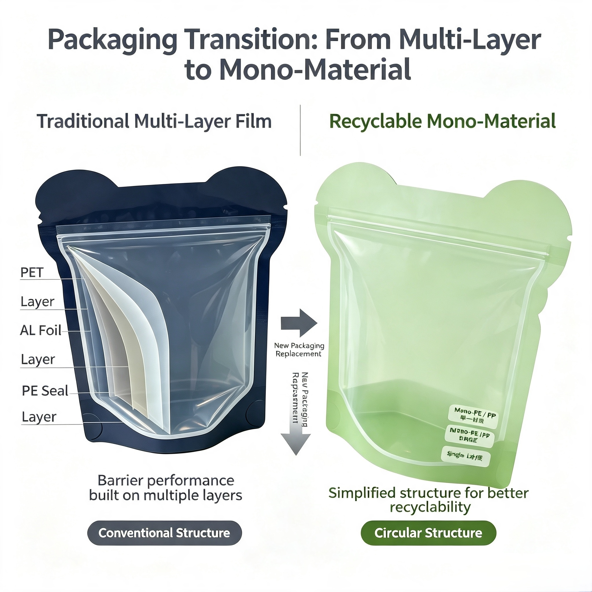

PPWR Full Application: Essential Compliance Guide for Food Flexible Packaging Exporters

On August 12, 2026, the EU Packaging and Packaging Waste Regulation (PPWR, EU 2025/40) officially entered full application, replacing the Packaging Directive (94/62/EC) that had been in place for nearly 30 years. Unlike a directive, PPWR is a regulation — directly applicable across all 27 EU member states without national transposition, creating a unified market access standard.
For food flexible packaging exporters — whether you supply coffee pouches, snack bags, or dry food packaging — understanding what changed on August 12 and what you need to do next is essential for maintaining EU market access.
1. What Changed on August 12, 2026?
The following requirements became mandatory from August 12, 2026:
🔴 Heavy Metal Limits (All Packaging)
- Lead, cadmium, mercury, and hexavalent chromium — total content ≤ 100 mg/kg across all packaging materials.
- Applies to all packaging components: films, inks, adhesives, coatings.
- RoHS reports cannot substitute — testing standards and limit logic differ.
🔴 PFAS Restrictions (Food-Contact Packaging)
- Single non-polymer PFAS: < 25 ppb.
- Sum of targeted non-polymer PFAS (including precursors): < 250 ppb.
- Total organic fluorine (including polymer PFAS): < 50 ppm.
- No inventory transition period — non-compliant packaging produced before August 12 cannot be placed on the EU market after this date.
🔴 Packaging Recyclability (Basic Requirement)
- All packaging placed on the EU market must be technically recyclable — capable of being collected, sorted, and entering material recycling streams.
- Detailed recyclability standards (A/B/C grades) will apply from January 1, 2030. By 2038, only Grade A and B recyclable packaging will be permitted.
🔴 EPR Registration (Producer Responsibility)
- Producers placing packaged goods on the EU market must register for EPR in each EU member state where they operate.
- Registration number is not transferable across countries.
- Non-EU exporters must appoint an EU Authorized Representative.
🔴 Labeling & Traceability (New Requirements)
- Packaging must display an identification code (model, batch, serial number, or SKU combination).
- Must include the manufacturer or importer's EU company name, registered trade name, contact address, and electronic contact details.
- Each manually separable packaging component must be separately labeled with material abbreviations and numeric codes.
2. What About Existing Inventory and Goods In Transit?
This is one of the most frequently asked questions among exporters. The key distinction is "first placed on the EU market."
- Before August 12, 2026 — already placed on the EU market: Generally no retrospective compliance required for new sustainability and labeling requirements.
- Produced, shipped, or arrived in EU port — but not yet released into free circulation: NOT yet placed on the EU market. Must comply with applicable PPWR requirements.
- Released into free circulation before August 12: Typically considered placed on the EU market; retain release and batch documentation.
- In bonded warehouse or customs supervision: Generally NOT considered placed on the EU market — confirm release status.
For inventory produced but not yet placed on the market, destruction is generally not required — compliance information can be supplemented through accompanying documentation.
3. Why This Matters for Flexible Packaging Exporters
PPWR compliance is now a hard market access requirement, not a "nice to have."
- Non-compliant packaging can be detained at customs — EU authorities have the power to enforce at the point of entry.
- Fines and market delisting are real risks — brands without compliant packaging solutions will lose supplier qualifications.
- European retailers are already requesting PPWR compliance documentation — importers and brand owners must submit material composition reports, test certificates, and recyclability assessments.
4. Key Strategic Actions for Flexible Packaging Exporters
✅ Action 1: Audit Your Existing Packaging Portfolio
- Map all flexible pouch SKUs exported to the EU.
- Identify high-risk structures: multi-material laminates (PET/AL/PE, PA/PE) and packaging using PFAS coatings.
- Prioritize redesign for products with aluminum foil composites and grease-resistant coatings containing PFAS.
✅ Action 2: Shift to Mono-Material Recyclable Packaging
- Replace difficult-to-recycle mixed composite films with mono-PE / mono-PP recyclable structures.
- Mono-material packaging supports mechanical recycling while maintaining barrier performance for dry food, coffee, and snacks.
✅ Action 3: Prepare Material Testing & Certification
- Arrange PFAS, heavy metal, and food-contact safety testing from accredited laboratories.
- Key sampling note: Different ink colors and different masterbatch materials must be tested separately.
- Collect raw material certificates, ink & adhesive data for complete technical dossiers.
- Document retention: Technical documentation and DoC must be kept for 5 years (single-use packaging) or 10 years (reusable packaging).
✅ Action 4: Complete EPR Registration
- Confirm EPR registration deadlines in each EU member state where you operate.
- EPR registration numbers are not transferable across countries.
- Non-EU companies must appoint an EU Authorized Representative.
✅ Action 5: Prepare Packaging Minimization Compliance
- From January 1, 2030, packaging must meet minimization requirements — "marketing needs" will no longer be accepted as a justification for excess packaging.
- Empty space ratios will be regulated for transport, e-commerce, and multi-packaging.
✅ Action 6: Update Packaging Labeling
- Ensure packaging displays identification code and manufacturer/importer EU contact information.
- From 2028, material composition must be shown using pictograms.
5. Looking Ahead: The PPWR Roadmap
PPWR compliance is not a one-time event — it's a phased journey:
- 2026 (Now): Heavy metals, PFAS (food contact), EPR registration, recyclability declaration, labeling.
- 2028: Recycled content targets for plastic packaging begin; pictogram material labeling.
- 2030: Recyclability grades (A/B/C), packaging minimization, empty space limits, higher recycled content requirements.
- 2038: Only Grade A & B recyclable packaging permitted.
Conclusion
PPWR is now fully in force. It is no longer a "future regulation" — it is the current market access standard for the EU.
For food flexible packaging exporters serving the EU market, the time to act is now. Early compliance not only secures market access but also builds trust with European retailers and brand owners who are already actively screening suppliers for PPWR documentation.
If you are exploring PPWR-compliant mono-material packaging structures, need help with material testing, or want to understand how to navigate the technical documentation and DoC requirements, our team is here to support you.
Need PPWR-compliant flexible packaging solutions?
Our team can help you navigate the new regulation and develop compliant mono-material packaging.
📧 Email: may.lee@shenyingpacking.com
💬 WhatsApp: +86 13424643780